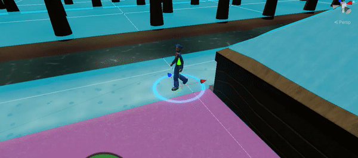

In game view

In editor view
A game about the first colony in the Netherlands.
Commisioned by museum "De Proefkolonie", the first official client of KoalaFishStudios!
Our contact with the museum all went through Alfred Geerts.
"De Proefkolonie" is a museum about the first colony in the Netherlands.
It is positioned in Drenthe and mainly focuses on 1 person in Dutch history, Johannes van den Bosch.
Johannes tried to end poverty by allowing poor folks to work on the colony and earn their way back into society.
He believed in rewarding hard work and was strictly against charity. Johannes founded the first colony and many more to come.
Nowadays, almost 1.000.000 Dutch citizens are decendents from the colonists that inhabited these colonies.
Our assignment was to create a game that tells Johannes' side of the story. It had to focus on the planning and dedication that went in to establishing the first colony and should show the hardship that Johannes went through to make his concept work.
Visiting the museum and the old colony grounds
Laura, Me and Alfred (respectively)
Johannes van den Bosch
To play the game, the player is tasked to control the colonists inside the colony by selecting which chore they should perform.
This was my first project that required multiple AI agents with realistic behaviour. Luckily I learned about behaviour trees in our previous school semester which is what I ended up using for this project.
You can find the code for the behaviour tree at the bottom of this page.
To define the AI's behaviour, I started out by making a flow diagram for the behaviour tree.
I set it up in a way that we could add new behaviours later on, but because of our small scope we stuck with just the "Farm" behaviour.
The AI agents use unity's built-in navmesh components to handle pathfinding.
One challenge I ran into was making the pathfinding of the agents more realistic. If we take the "GetWaterFromWell" task, for example, we see the agents walk in a straight line from wherever they are to the well, cutting through their own farms and not caring about the pathways of the colony.
More realistic would be if they prefered going over the laid out pathways, as these would be much nicer to walk on and would prevent the colonists from ruining their own crops by stomping all over them.
To achieve this, I used Unity's built-in navmesh areas. The way this works is that you have a collection of areas which each have their own cost. The navmesh agents than use Unity's enhanced A* pathfinding to calculate which route to take depending on which route results in the lowest cost.
To define the areas, I used ProBuilder to create the 3D shapes for the farm plots and houses, added mesh colliders to them and started baking the navmesh. Doing this results in a colour-coded overlay of the navigation areas, and after tweaking the cost of each area a bit I got the result I was after.
Navigation areas / farm plots
Full view of the colony with areas
In game view
In editor view
Something I keep running into when working on projects is that I write a lot of IENumerators that have mostly the same behaviour. This just feels wrong and inefficient each time I do it, so during this project, I took the time to explore a clean solution to this problem.
I'm not completely satisfied with the final result, as it still has some big issues due to a lot of oversights I made in determining the usage of this tool. Nevertheless, I learned a lot from this effort and I believe it's important for me to also share the things that aren't perfect, because they still help me become a better developer.